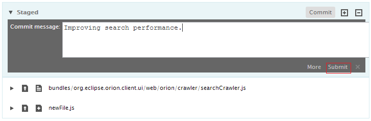
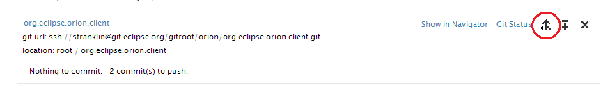
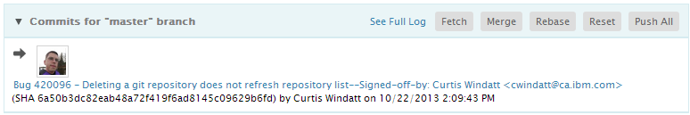
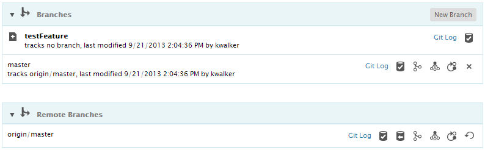
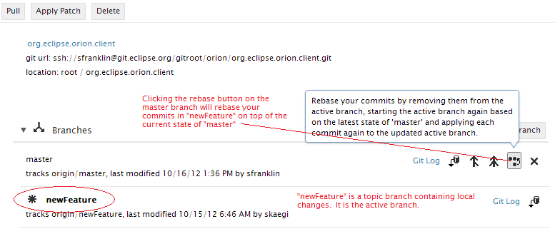
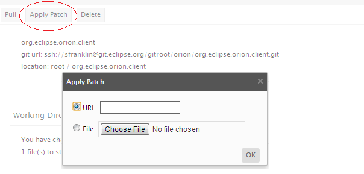
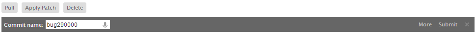
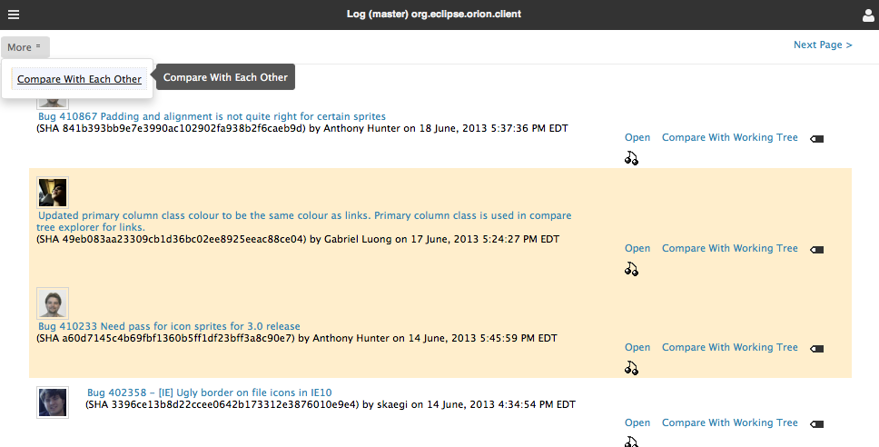

Working with Git
Cloning a Repository
- Go to the
Repositories page
- Click Clone Repository in the tool bar.
- Type or paste in the URL for the repository in the prompt.
- By default, a folder will be created using the name of the Git repository. Press Enter or click Submit to get the default folder.
- Click the <More> button in the prompt if you wish to provide a different name or clone the repository into an already existing folder.
- Press the Esc key to cancel the clone if you change your mind.

Committing Changes
- Go to the
Git Status page
- Click on each change to
compare the changes and
stage them.
-
Commit the staged changes to your repository.

Fetching and Merging from a Remote
You may fetch and merge from a remote from a number of different Orion pages.

- Go to the
Repository detail page.
- Click Pull in the toolbar to pull (fetch and merge) the repository. Changes are merged into your active branch.
- Click Fetch in the Commits section to fetch the remote tracking branch for the current branch. Click Merge to merge with the local branch.
- Locate a particular branch in the Branches section and click Fetch to fetch that branch. Click Merge to merge with your active branch.
- Go to the
Git Status page and click on the Fetch and Merge buttons shown in the
Commits Area on the page.
- Go to the
Git Log page for the remote branch and click on the Fetch and Merge buttons in the toolbar.
Pushing to a Remote
You may push to a remote from a number of different Orion pages.

- Go to the
Git Status page and click on the Push All button shown in the
Commits Area on the page.
- Go to the
Git Log page for the local branch and click on the Push All button in the toolbar. In rare cases, you may want to use the Force Push All button to override the remote tracking branch content with your local branch content.
Switching between Branches
- Go to the
Repository detail page.
- The Branches section on the page will show you your most recently used branches.
- Click View All to see a list of all local and remote branches.
- You can checkout different branches, fetch, merge, rebase, and reset various branches. See
Repository branches in the reference documentation for examples of these actions.

Rebasing Changes
When you have been making commits in a topic branch, with the intention of pushing the code into a different branch, it is often useful to rebase those commits on another branch. Rebasing will make your commits appear as if the changes were made based on the code in another branch.
- First ensure that all of your changes are committed to your topic branch. This is typically done on the
Git Status page.
- Go to the
Repository detail page and look for the branch you wish to rebase on in the Branches section. If the branch is not visible, click View All to see all local and remote branches.
- Now make sure that the branch you wish to rebase on is up to date. If you are rebasing on a remote branch, you will want to Fetch that branch. If you are rebasing on a local branch, you will want to temporarily make that branch current, and fetch and merge the branch.
- When you are sure that the branch you are rebasing upon is up to date, then
checkout your topic branch (if it is not already the active branch) to make it active.
- Now find the other branch in the list and click on the Rebase icon.

Making a Patch
Some development teams might use patches to distribute code changes rather than relying on git branches and commits. You can make a patch of your working changes in Orion.
- Go to the
Git Status page.
- Select the changes in the Unstaged section that you wish to include in the patch.
- Click on the Show Patch link. This will open a browser page with a generated diff. You can copy and paste this diff or save it into a file.
Applying a Patch
If you are on the receiving end of a patch, you can apply it from the
Repository detail page.
- First ensure that you are working in the branch in which you wish to apply the patch.
- Click Apply Patch in the main toolbar
- You will be prompted for either a local file or URL containing the patch. The URL can be used to directly link to patches in bug reporting or review systems.

Finding a Commit
When working in a team, a common situation is for someone to give you the commit id (sha) of a particular commit they would like you to review or otherwise work with. To find a commit by id:
- Go to the
Repository detail page.
- Enter Ctrl+Shift+H to trigger the Open Commit prompt.

- Paste in the id of the commit.
- If the commit is found, you can open the
Git Commit Page to work with the commit.
Preparing a Commit for Review
- Open your commit in the
Git Commit Page.
- Click the Ask for review button to generate an email and link for finding and reviewing the commit. (See
Ask for Review for details.)
Reviewing a Code Contribution
If you receive a link (via email, message, bug report) to an Orion review, click the review link to open the
Ask for Review page.
Storing Credentials
You may store your git repository credentials using the
User Profile settings.
Comparing File Changes in the Repository History
Sometimes it is necessary to see what changes have occurred to a particular file over time.
- Locate the file of interest in the
Navigator page.
- Select the file and choose the Git Log link in the Actions menu.
- You can compare any change to the working copy using Compare with working tree or you can select two changes to review the differences between them.

Updating this document
This document is maintained in a collaborative wiki. If you wish to update or modify this document please visit
http://wiki.eclipse.org/Orion/Documentation/User_Guide/Tasks/Working_with_Git